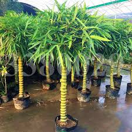

Bahçe Bitkileri

Bitki seçiminde dikkat etmeniz gereken estetik kurallar nelerdir?
Orantı: Seçtiğiniz bitkiler ile yapı arasında orantı olması gerektiği gibi, bitkilerin de birbiriyle orantılı olması gerekmektedir. Mesela büyük bir bahçede yapının yakınına yerleştirdiğiniz küçük alt dalları alınmış gövdesi çıplak (yani tijli) bir ağaç, hem görsel hem de fonksiyonel olarak rahatsız edici olabilir. Yakın cisim ve bitkilerde bu önemli bir kuraldır.
Simetri: Estetik anlamda insanda güzel duygu yaratacak bir simetri uygulanmalıdır. Mesela ikiz villalarda yürüme yolunun her iki yanı bitkilendirilirken, bir villa varsa bahçede yürüme yolunun sadece bir yanı bitkilendirilirip diğer bitkilerin de tekli uygulaması yapılarak, tasarımın kendi içinde bir simetri yakalamasını sağlayabilirsiniz.
Denge: Alanların oranları ve miktarları ile bitkiler, yapılar, kütleler ve boşluklar arasında bir denge sağlamak, düzenlemenize estetik bir artı katacağı gibi aşırılıktan kaçmak, doğallık hissini daha çok vurgulayabilir.
Tarz: Bahçenizin karakteristik bir duruşu olmalıdır. Bitkilerin rastgele dikilip özenilmeden seçilmiş bir hali olmasıyla değil de birbirine uyan, benzer tarzda malzemelerin seçilmesiyle ve bu malzemelerin de bahçenin ve evin mimari tarzıyla uyumlu olması ve uygun yerde kullanılması ile bu duruşu yakalamak mümkündür. Bazen tezat renklerle ya da farklı geometrilerle de bu tarzı yakalayabilirsiniz, ancak bu biraz daha profesyonel bir bitki seçim bilgisi gerektirmektedir. O yüzden yeni başlayanlar, uyumu yakalayan sofistike seçimler yapabilirler. Tasanmsal açıdan bakarsak örneğin; bir Japon bahçesinde kayrak taşı, salkım söğüt gibi seçimler daha doğal ve rahatlatan bir bahçe yaratmaya yönelik olup, bu eğimli çatı kullanılan benzer mimarideki bir villanın bahçesinde çok uygun duracaktır.
Uyum: Bu uyum gerek tasarımsal olarak, gerek geometrik olarak, gerek materyal olarak ve gerekse renk tonları olarak düşünülebilir.
Çeşitler
- Safran soğanı
- sümbül
- zambak